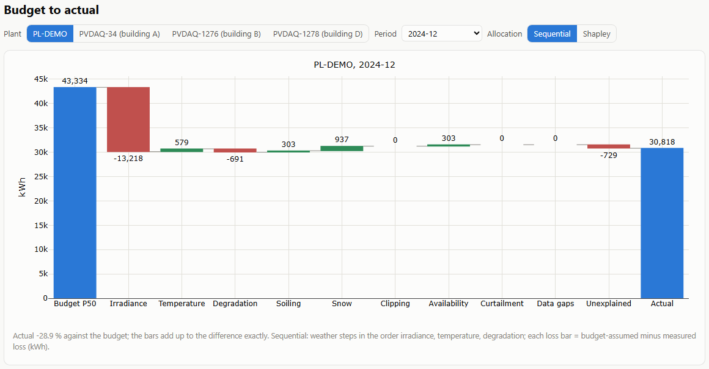

Where did the PV energy go? A monthly bridge from P50 budget to actual
A monthly waterfall that explains the gap between the budget and metered production in kWh, cause by cause, and checks the irradiance sensor before anything else. Every bar is tested against losses of known size.
0.5 %error on availability and curtailment losses against a known truth, 48 months
4 of 4logger clock shifts found; unchecked, they shift the bars of those months by 3.7-5.5 % of budget
9.5-16.4 %how far the real rooftops' shared pyranometer reads above ERA5

The monthly waterfall on the project's live page (synthetic plant, December 2024). The bars add up to the difference between budget and actual exactly.
The problem
Every month an asset manager reports how far each plant was from its P50 budget. The performance ratio alone does not say why. A sunny month can hide an inverter outage, curtailment looks like underperformance, and a pyranometer that reads high makes a healthy plant look poor.
Owners, O&M contractors and lenders need the gap split into causes they can act on, claim for or accept, in energy rather than in ratios.
Data and method
Budget: a pvlib model on the PVGIS typical meteorological year, written in a PVsyst-like hourly layout. A monthly P50 table or a real export can be read instead.
Data: three NREL PVDAQ rooftops in Las Vegas (2016-2018, 15-minute data, one shared pyranometer) and a synthetic 1.32 MWp plant in central Poland on ERA5 weather 2021-2024, whose true losses are known.
Bridge: weather and age first (irradiance, temperature, degradation), then soiling, snow, clipping, availability, curtailment and data gaps, measured in kWh on the weather that actually occurred, and an unexplained rest. The bars add up exactly every month; a Shapley allocation is computed alongside.
Sensor checks before anything else: clock shifts, orientation and level, shading, and drift against three references.
Verification: faults of known size are injected one at a time into the real and the synthetic data and compared with what the bridge recovers.
Result
On the synthetic plant (48 months) the availability and curtailment losses come back within 0.5 % of the truth; data gaps, soiling and snow within 7-10 %.
A 3-day outage of one inverter, injected into the real rooftops, is recovered within 1 % (-0.0 to +0.9 %).
Four of four 1-hour logger clock shifts are found. Without the check they shift the bars of the affected months by 3.7-5.5 % of the budget in sum, with it by 0-0.2 %. A pyranometer drifting to -3 % is flagged in all four runs, but late: 53-288 days after the drift started.
On the real rooftops the shared sensor reads 9.5-16.4 % above ERA5. Left uncorrected, the irradiance bar would read +10-16 % and the unexplained bar -15 to -25 %.
Three long outages turn up that nobody logged (availability 91.8-95.6 % in those years). After all known causes, -6 to -10 % of the budget stays unexplained: these 2010-2011 rooftops run at a PR of 0.63-0.67 against the 0.76 of a generic budget model.
Synthetic plant, 48 months: every loss against its truth
Loss
Truth MWh
Estimate MWh
Total error
Availability
46.7
46.5
-0.5 %
Curtailment (set-points)
78.3
77.9
-0.5 %
Data gaps
14.4
13.4
-7.2 %
Soiling (rain-washed)
52.0
47.9
-7.9 %
Snow
112.1
101.1
-9.9 %
Clipping
5.4
7.5
+40 %
Monthly production is 20-190 MWh, so the mean monthly errors are 0.01-0.24 % of the month's energy. The clipping error is the model's: the synthetic plant has an incidence-angle loss that the configured model does not.
What it means for a decision
Check the sensor before blaming the plant. A pyranometer that reads 10-16 % high, or a logger an hour off, moves more energy between the bars than most faults do.
The availability and curtailment bars are the measured kWh lost, net of what the budget assumed: the quantity an availability or performance clause pays for. Each bar can be recomputed by hand.
Soiling of 2 % a month is within the noise of a noisy plant. Where soiling matters contractually, a soiling station or a cleaned reference string is the right tool, not a model.
A large and steady unexplained bar points at the budget model first. Here the rooftops underperform a generic model with 8 % DC losses; that calls for a look at the budget assumptions before an O&M investigation.
Limitations
A PVWatts-level model: no beam/diffuse split for measured irradiance, no string or MPPT level, no partial inverter availability.
Soiling estimates need rain or cleanings to anchor them. Drift detection needs about 1.4 years of data and flags only beyond 2.5 %.
The examples are small rooftops on one campus sharing one sensor, and a synthetic Polish plant. The PVsyst-like budget reader has not been tested on a file produced by PVsyst.
The IEC 61724-1 definitions follow public descriptions and are not certified; the contract clauses are illustrative.